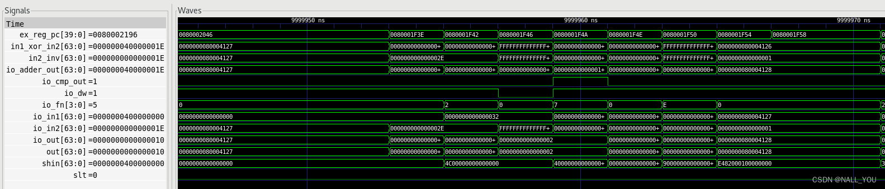
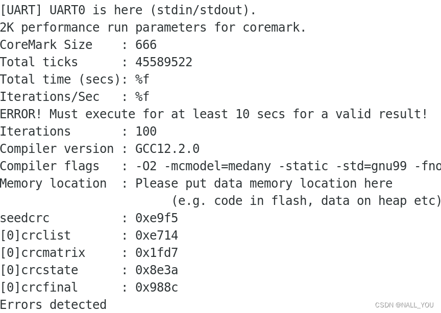

Coremark Tutorial
背景
CoreMark是由EEMBC(Embedded Microprocessor Benchmark Consortium)的Shay Gla-On于2009年提出的一项基准测试程序，CoreMark的主要目标是简化操作，并提供一套测试单核处理器核心的方法。
测试标准是在配置参数的组合下单位时间内运行的CoreMark程序次数（单位：CoreMark/MHz），该数字值越大则说明测试的性能越好。
CoreMark是一个简单但复杂的基准测试，专门设计用于测试处理器核心的功能。运行CoreMark会生成一个单一的评分，使用户能够快速比较处理器之间的差异。目前嵌入式CPU行业中普遍公认的性能测试指标包括：MIPS/Dhrystone/CoreMark。 与Dhrystone类似，CoreMark也是小巧、便携、易于理解、免费，并且显示一个单一的基准测试分数。与Dhrystone不同的是，CoreMark有特定的运行和报告规则，并且旨在避免Dhrystone存在的问题，即由于使用的编译库不同而导致测试结果难以比较。
例如，Dhrystone的主要部分实际上是展示了编译器优化工作负载的能力，而不是MCU或CPU的能力。因此，Dhrystone更多地被用作编译器基准测试，而不是硬件基准测试。
同样，在Dhrystone的计时部分内部进行库调用。通常，这些库调用会占据基准测试消耗时间的大部分。由于库代码不是基准测试的一部分，如果使用不同的库进行比较，很难得出准确结果。最后，关于如何运行Dhrystone存在一些指导方针，但由于结果没有经过认证或验证，这些指南并不强制执行。关于如何报告Dhrystone结果也没有标准化，存在着各种不同的格式（如DMIPS、每秒Dhrystones、DMIPS/MHz）。
使用方法
根据eembc官方说的方法，如果想要在risc-v运行toolchain，需要在core_portme.c/.h/.mak这几个源文件作修改。
源码阅读
coremark_main.c
//内存分配 包括stack/static/malloc三种方式
#elif (MEM_METHOD==MEM_STACK)
for (i=0 ; i<MULTITHREAD; i++) {
results[i].memblock[0]=stack_memblock+i*TOTAL_DATA_SIZE;
results[i].size=TOTAL_DATA_SIZE;
results[i].seed1=results[0].seed1;
results[i].seed2=results[0].seed2;
results[i].seed3=results[0].seed3;
results[i].err=0;
results[i].execs=results[0].execs;
}
/* 初始化3个benchmark */
for (i=0 ; i<MULTITHREAD; i++) {
if (results[i].execs & ID_LIST) {
results[i].list=core_list_init(results[0].size,results[i].memblock[1],results[i].seed1);
}
if (results[i].execs & ID_MATRIX) {
core_init_matrix(results[0].size, results[i].memblock[2], (ee_s32)results[i].seed1 | (((ee_s32)results[i].seed2) << 16), &(results[i].mat) );
}
if (results[i].execs & ID_STATE) {
core_init_state(results[0].size,results[i].seed1,results[i].memblock[3]);
}
}
/* 自动确定迭代次数 至少10s */
if (results[0].iterations==0) {
secs_ret secs_passed=0;
ee_u32 divisor;
results[0].iterations=1;
while (secs_passed < (secs_ret)1) {
results[0].iterations*=10;
start_time();
iterate(&results[0]);
stop_time();
secs_passed=time_in_secs(get_time());
}
/* now we know it executes for at least 1 sec, set actual run time at about 10 secs */
divisor=(ee_u32)secs_passed;
if (divisor==0) /* some machines cast float to int as 0 since this conversion is not defined by ANSI, but we know at least one second passed */
divisor=1;
results[0].iterations*=1+10/divisor;
}
//根据不同CRC统计值得到不同的执行模式，2k/6k/profile/performance/validata
switch (seedcrc) { /* test known output for common seeds */
case 0x8a02: /* seed1=0, seed2=0, seed3=0x66, size 2000 per algorithm */
known_id=0;
ee_printf("6k performance run parameters for coremark.\n");
break;
case 0x7b05: /* seed1=0x3415, seed2=0x3415, seed3=0x66, size 2000 per algorithm */
known_id=1;
ee_printf("6k validation run parameters for coremark.\n");
break;
case 0x4eaf: /* seed1=0x8, seed2=0x8, seed3=0x8, size 400 per algorithm */
known_id=2;
ee_printf("Profile generation run parameters for coremark.\n");
break;
case 0xe9f5: /* seed1=0, seed2=0, seed3=0x66, size 666 per algorithm */
known_id=3;
ee_printf("2K performance run parameters for coremark.\n");
break;
case 0x18f2: /* seed1=0x3415, seed2=0x3415, seed3=0x66, size 666 per algorithm */
known_id=4;
ee_printf("2K validation run parameters for coremark.\n");
break;
default:
total_errors=-1;
break;
}
/* 打印结果 */
ee_printf("CoreMark Size : %lu\n", (long unsigned) results[0].size);
ee_printf("Total ticks : %lu\n", (long unsigned) total_time);
#if HAS_FLOAT
ee_printf("Total time (secs): %f\n",time_in_secs(total_time));
if (time_in_secs(total_time) > 0)
ee_printf("Iterations/Sec : %f\n",default_num_contexts*results[0].iterations/time_in_secs(total_time));
#else
ee_printf("Total time (secs): %d\n",time_in_secs(total_time));
if (time_in_secs(total_time) > 0)
ee_printf("Iterations/Sec : %d\n",default_num_contexts*results[0].iterations/time_in_secs(total_time));
#endif
if (time_in_secs(total_time) < 10) {
ee_printf("ERROR! Must execute for at least 10 secs for a valid result!\n");
total_errors++;
}
coremark.h
call_bench_list/matrix/state()是benchmark的执行函数，和result[i].exe一起控制测试程序的执行 coremark_list_join.c/matrix.c/state.c/util.c分别为各自benchmark和CRC函数所在的源文件 core_portme.c修改的地方:
/* setting to 1/1000 of a second resolution by default with linux */
#ifndef TIMER_RES_DIVIDER
#define TIMER_RES_DIVIDER 1000000
#endif
#define SAMPLE_TIME_IMPLEMENTATION 1
#else
// 加入RISCV部分
#define NSECS_PER_SEC 500000000
#define EE_TIMER_TICKER_RATE 1000
#define CORETIMETYPE clock_t
#define read_csr(reg) ({ unsigned long __tmp; \
asm volatile ("csrr %0, " #reg : "=r"(__tmp)); \
__tmp; })
#define GETMYTIME(_t) (*_t=read_csr(cycle))//通过读时钟周期计数
#define MYTIMEDIFF(fin,ini) ((fin)-(ini))
#define TIMER_RES_DIVIDER 1
#define SAMPLE_TIME_IMPLEMENTATION 1
#endif
#define EE_TICKS_PER_SEC (NSECS_PER_SEC / TIMER_RES_DIVIDER)
这段代码是一个条件编译块，用于设置不同平台上计时器分辨率和实现细节。不同的编译分支适用于Linux系统和RISCV架构。其中包括cpu频率和定时器频率的设置，根据具体硬件特性确定。
core_portme.h修改的地方
如果定义了宏HAS_TIME_H，这表明该平台具有并支持time.h标准C库头文件。在这个分支中，CORE_TICKS被定义为clock_t，这是time.h中定义的一个类型，通常用于计算程序占用的处理器时间。但是RISCV-baremetal不用标准库，用newlabc 手动定义了size_t和clock_t为unsigned long int类型，并将CORE_TICKS设置为clock_t。用于baremetal，这些类型的大小需要匹配处理器输出的时钟大小和处理器支持的位数（xLen）。
/* Configuration: CORE_TICKS
Define type of return from the timing functions.
*/
#if defined(_MSC_VER)
#include <windows.h>
typedef size_t CORE_TICKS;
#elif HAS_TIME_H
#include <time.h>
typedef clock_t CORE_TICKS;
#else
/* Configuration: size_t and clock_t
Note these need to match the size of the clock output and the xLen the processor supports
*/
typedef unsigned long int size_t;
typedef unsigned long int clock_t;
typedef clock_t CORE_TICKS;
#endif
core_portme.mak修改的地方
设置RISCV工具链和路径，编译选项不变
# Flag: RISCVTOOLS
# Use this flag to point to your RISCV tools
RISCVTOOLS=$(RISCV)
# Flag: RISCVTYPE
# Type of toolchain to use
RISCVTYPE=riscv64-unknown-elf
# Flag: OUTFLAG
# Use this flag to define how to to get an executable (e.g -o)
OUTFLAG= -o
# Flag: CC
# Use this flag to define compiler to use
CC = $(RISCVTOOLS)/bin/$(RISCVTYPE)-gcc
# Flag: CFLAGS
# Use this flag to define compiler options. Note, you can add compiler options from the command line using XCFLAGS="other flags"
#PORT_CFLAGS = -O2 -static -std=gnu99
PORT_CFLAGS = -O2
FLAGS_STR = "$(PORT_CFLAGS) $(XCFLAGS) $(XLFLAGS) $(LFLAGS_END)"
CFLAGS = $(PORT_CFLAGS) -I$(PORT_DIR) -I. -DFLAGS_STR=\"$(FLAGS_STR)\"
跑10000000cycle，需要大概50min，跑通100次iteration，91830000cycle，大概需要460min=7小时40min。跑通了coremark，接下来需要加速跑的时间和利用它来评估设计（比如cache miss rate），要进一步看懂code。
总结一下遇到的问题，解决的方法和完成的工作：
1.用gdb跑了一遍在Linux上跑的coremark，熟悉代码；
2.遇到的问题：
a.仿真停在某一条指令，停在一条很正常的函数ret的压栈出栈指令。
看rocket code，结合波形，发现是id_is_returngood的问题，之前师兄熟悉rocket代码加的指令，删掉就可以继续跑了；
b.跑到10000001cycle之后，不能继续跑。
看.out输出 failed，没有正常退出，看.make_coremark.log(makefile输出的)报错，timeout，定位到test_driver.v函数，发现是max_cycle到极限了。如何改max_cycle？去看makefile，即可定位到variable.mak文件里面的CFLAGS变量，在里面修改timeout_cycles的值为100000000即可，实测90000000cycle，iterate 100 times，结果是可以的。
c.结果的tick value得到了，但是sec value没有得到，应该是time_in_secs函数出问题了，到portme.c文件去找问题。log是sec没有10 s
从portme.c可得，1000000000ticks=1s,45589522ticks=0.05s左右，也就是50ms.
#define NSECS_PER_SEC 1000000000 // normal
#define EE_TIMER_TICKER_RATE 1000 // set for 1ms
#define CORETIMETYPE clock_t
#define read_csr(reg) ({ unsigned long __tmp; \
asm volatile ("csrr %0, " #reg : "=r"(__tmp)); \
__tmp; })
#define GETMYTIME(_t) (*_t=read_csr(cycle))
#define MYTIMEDIFF(fin,ini) ((fin)-(ini))
#define TIMER_RES_DIVIDER 1
#define SAMPLE_TIME_IMPLEMENTATION 1
#endif
#define EE_TICKS_PER_SEC (NSECS_PER_SEC / TIMER_RES_DIVIDER)
3.可以深入探究的：
a.bare-metal怎么实现内存分配的？
(gdb) n
143 results[i].size=malloc_override;
(gdb) n
146 results[i].memblock[0]=portable_malloc(results[i].size);
(gdb) info locals
malloc_override = 2000
i = 0
j = 0
num_algorithms = 0
known_id = -1
total_errors = 0
seedcrc = 0
total_time = <optimized out>
results = { {seed1 = 0, seed2 = 0, seed3 = 102, memblock = {0x0, 0x0, 0x0, 0x7fffffffde00}, size = 2000, iterations = 0, execs = 7, list = 0x7ffff78abd8d <intel_check_word+173>,
mat = {N = 8388608, A = 0xffffffffffffffff, B = 0x7ffff75ef8f0 <sighandler_setxid>, C = 0xf0}, crc = 1, crclist = 0, crcmatrix = 0, crcstate = 0, err = 9101, port = {portable_id = 1 '\001'}}}
(gdb) s
portable_malloc (size=2000) at linux64/core_portme.c:32
32 return malloc(size);
linux是通过上述过程实现的，也就是melloc()函数，分配给的size空间为2000. 如果想要知道bare-metal怎么分配内存，可能要去看.out和.dump结合理解，好麻烦，，，后面看吧
b.bare-metal怎么用定时器计数的？没有syscall/ecall的情况下（如果有rt-thread类似简单的os有ecall） 上述代码定义了csrr内联汇编指令，可以读取寄存器的值得到cycle。
(gdb) bt
#0 main (argc=8, argv=0x7fffffffdee8) at core_main.c:203
(gdb) s
start_time () at linux64/core_portme.c:125
125 GETMYTIME(&start_time_val );
(gdb) s
__GI___clock_gettime (clock_id=0, tp=0x6040b0 <start_time_val>) at ../sysdeps/unix/clock_gettime.c:93
(gdb) s
115 SYSDEP_GETTIME_CPU (clock_id, tp);
//get secs
secs_ret time_in_secs(CORE_TICKS ticks) {
secs_ret retval=((secs_ret)ticks) / (secs_ret)EE_TICKS_PER_SEC;
return retval;
}
CORE_TICKS get_time(void) {
CORE_TICKS elapsed=(CORE_TICKS)(MYTIMEDIFF(stop_time_val, start_time_val));
return elapsed;
}
//RISCV-baremetal
#define read_csr(reg) ({ unsigned long __tmp; \
asm volatile ("csrr %0, " #reg : "=r"(__tmp)); \
__tmp; })
#define GETMYTIME(_t) (*_t=read_csr(cycle))
c.里面有3个子workload，执行过程是什么样的？ 全跑的话，results[0].exes value是7。如果想要只执行某一个，设置这个参数就可以了。 而且，与猜想的一样，bench_list就是整理3个benchmark的数据，里面可以跳转到calc_func执行matrix_cal和state_cal。
 